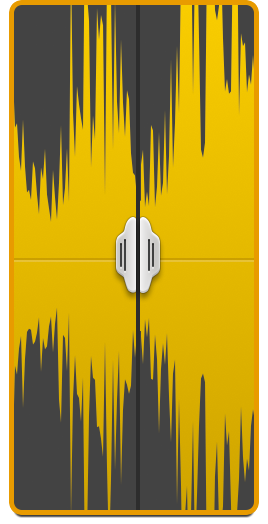
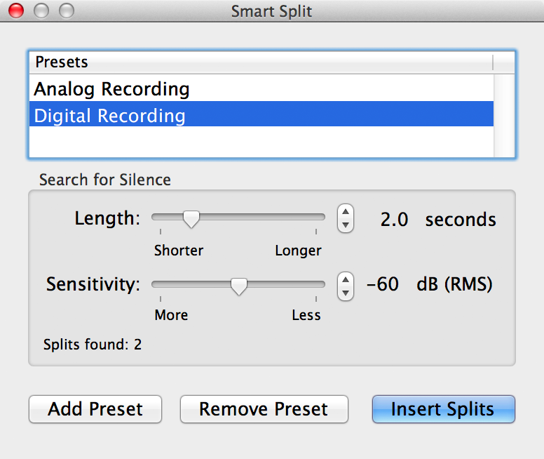

Splitting Audio
Fission can help you rapidly split one long audio file into multiple files.
Split Points and Clips
Fission uses split points, or splits, to separate clips in an audio file. When a file contains multiple clips, the split points are what separate each clip. Saving a file with multiple clips results in multiple audio files being saved out.
To adjust the length of a clip, just move the relevant split. Likewise, to merge two clips together, just remove the split point separating them.

A split point between two clips
Adding Split Points
Adding a split point can be done in several ways. Generally, placing the playhead where you wish to split is the first step. You can click once in the main waveform to move the playhead, or simply play the file until the desired point. Once the playhead is in place, you can click the Split button in the Toolbar, or select Split at Playhead from the Clip menu. A split point will be inserted into the file, separating the audio into two distinct clips.
If you know the exact timestamp where you'd like to split, you can also use the Add Split option in the Tools menu to add a precise split.
The Smart Split Tool
Fission's Smart Split tool can be used to automatically find split points in a file, based on where there are silences. This can be particularly useful for rapidly splitting up recordings from analog sources like records and tapes, as well as multi-song digital recordings. To access it, select Smart Split from the Tools menu:

Fission's Smart Split Window
Smart Split identifies silences based on the settings selected and shows where it will place split points. When you click the Insert Splits button, the split points will be added to the file, creating multiple clips. If needed, adjust these splits by moving them, adding more, or removing any which are erroneous. Once you've got the split points set, save the audio out and you'll get a distinct file for each clip.